Chengdu: Sichuan's Heart and Soul
Chengdu represents something rare: a major Chinese city that has maintained its cultural identity while embracing rapid modernization. The city sits at the heart of Sichuan Province, a region that has historically resisted homogenization and retained distinctive traditions, cuisine, and aesthetic sensibilities. To understand Chengdu is to understand how a Chinese city can be simultaneously deeply local and thoroughly contemporary—how tradition can coexist with neon, how engineering marvels two thousand years old can frame urban parks, how endangered species can live in the middle of a metropolis.
Pandas: Living Symbols in the Urban Landscape
Chengdu is the world's panda capital. The city hosts the Giant Panda Research Base, the most important facility for panda conservation outside their natural habitat. These massive, gentle herbivores have become synonymous with Chengdu's identity, appearing in logos, architecture, and public consciousness in ways that transform the city's relationship to its own image. Seeing pandas in Chengdu is not tourism—it is pilgrimage to the heart of a species' survival.
Walking the research base, you encounter pandas in various stages of life: new mothers protecting newborns, juveniles playing with an exuberance that feels almost human, older pandas content with the simple act of eating bamboo hour after hour. The facility's design balances conservation with education, allowing visitors to observe pandas while maintaining environments that support authentic behavior. This balance—between human needs for access and animal needs for space—defines much of contemporary conservation philosophy.
The pandas represent something deeper about Chengdu's character: a city that takes its relationship with nature seriously. The research base exists because Sichuan's bamboo forests provided the ecosystem that pandas evolved within. Chengdu has chosen to honor that relationship by hosting the world's most advanced panda conservation program. Walking among pandas in a modern city creates cognitive dissonance that clarifies something essential: humans and endangered species can coexist if we make the choice to allow it.

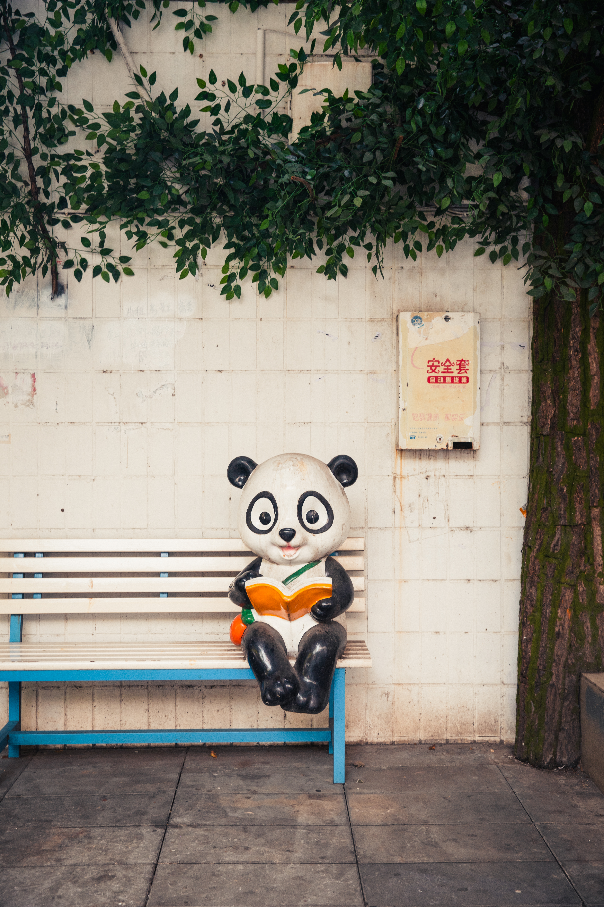
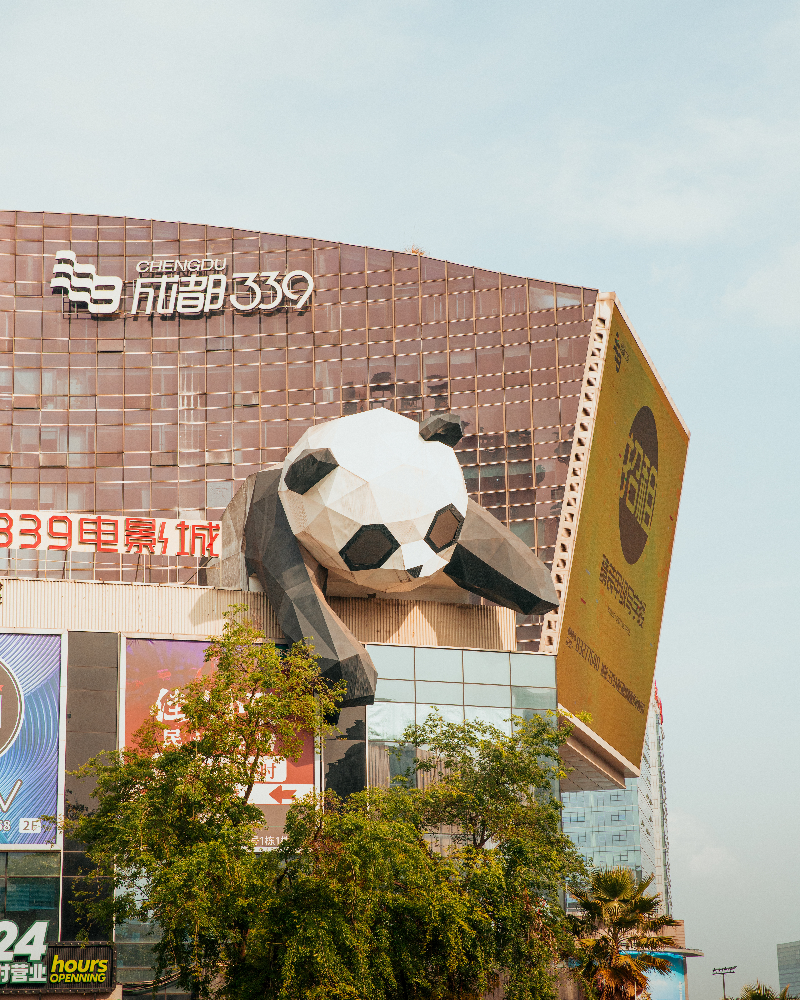
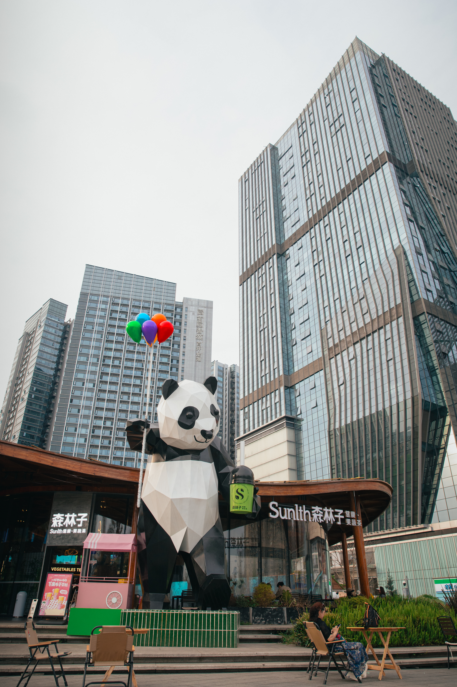
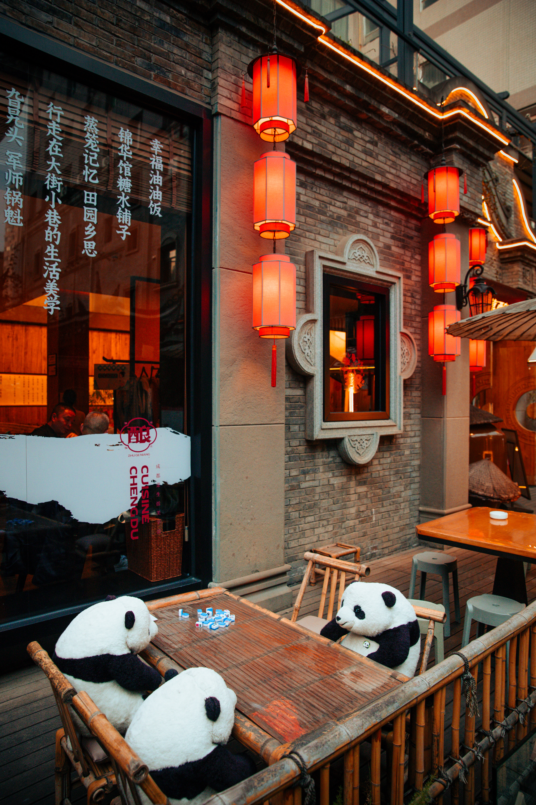
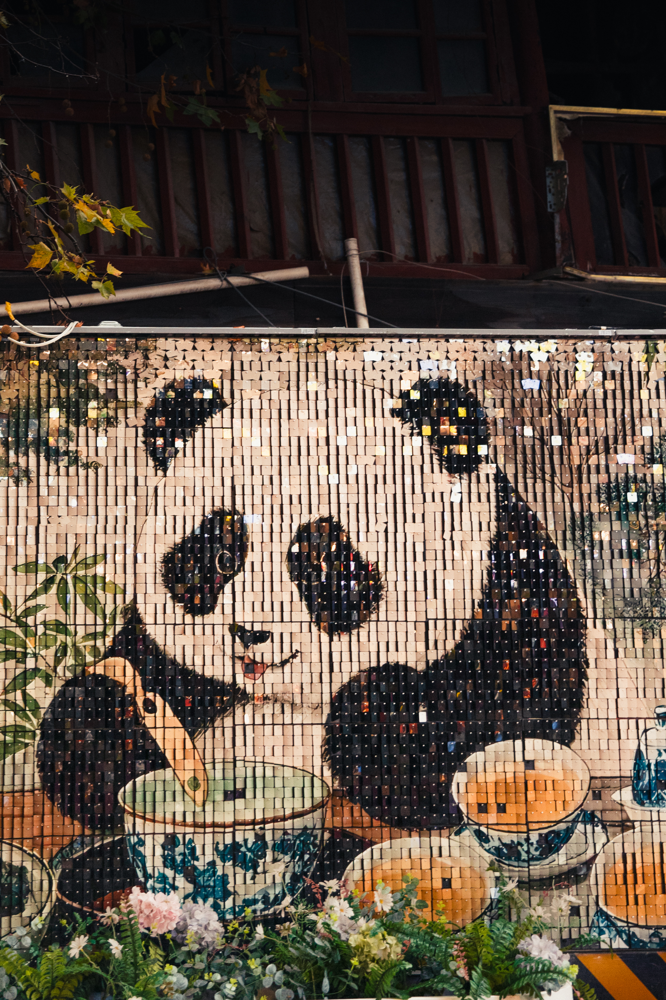
Sichuan Traditions: The Soul of Regional Identity
Sichuan culture represents thousands of years of accumulated practice, aesthetic refinement, and philosophical commitment. Unlike regions that have been absorbed into broader Chinese urban uniformity, Sichuan maintains distinctive traditions that define daily life, leisure, food, and social interaction. Chengdu is where these traditions remain most visible: you encounter them in tea houses where people still spend entire afternoons playing mahjong, in street vendors preparing food according to recipes unchanged for centuries, in the way local architecture incorporates traditional elements alongside modern materials.
The tradition of opera, embroidery, landscape painting, and literary culture runs deep in Chengdu. These are not museum artifacts but living practices. You find embroiderers still creating intricate brocade textiles in workshops, musicians studying classical instruments, scholars engaging with literary traditions stretching back centuries. Chengdu hasn't preserved these traditions in amber—it practices them as part of ongoing life. This continuity gives the city a depth that newer Chinese cities cannot match.
Walking Chengdu's streets reveals this tradition constantly. The spice blend in a street noodle vendor's broth represents Sichuan culinary philosophy developed over centuries. The way elderly men gather in parks to practice calligraphy or engage in quiet games reflects Daoist principles about harmony and leisure. Traditional crafts persist not because tourists want souvenirs but because locals value them as part of who they are. This is what Sichuan tradition means in Chengdu: not performance but continuity.
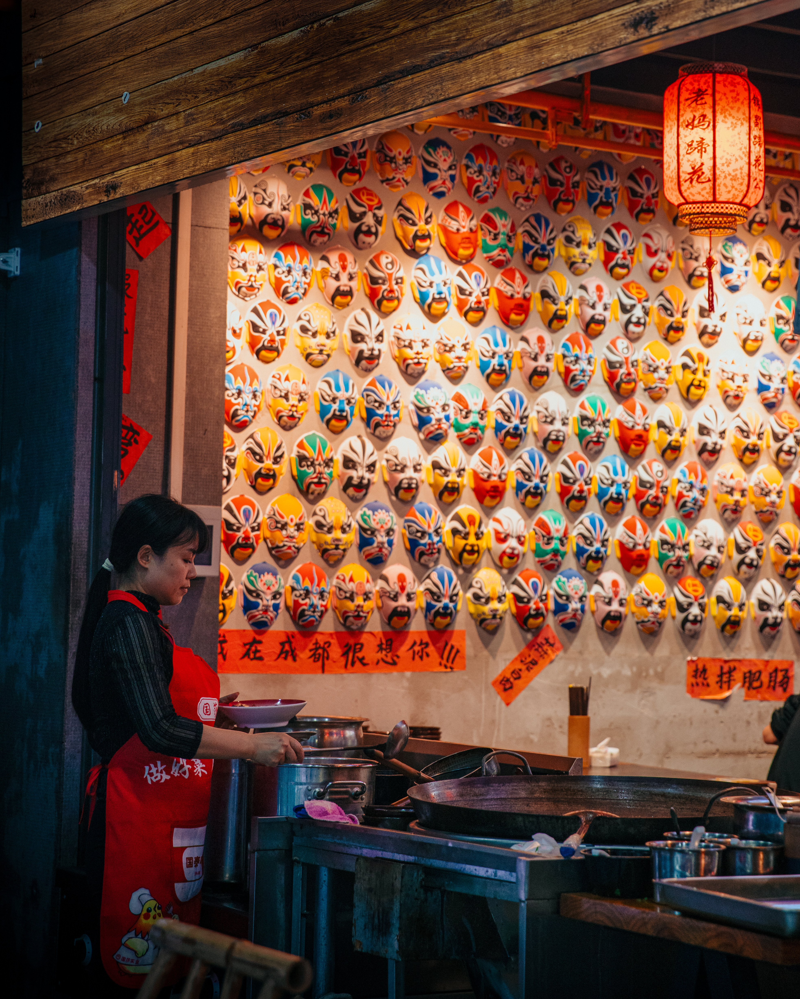
Dujiangyan: Ancient Engineering Meets Modern Water Management
Thirty kilometers from Chengdu stands Dujiangyan, one of the world's oldest hydraulic engineering systems still in operation. Built in the 3rd century BCE, the system diverts water from the Min River using simple principles—a fish-mouth weir, an artificial island for dividing flow, a spillway canal for flood control. No dams. No concrete. No electricity. Just geometry and understanding of water physics. Two thousand years later, it still prevents flooding and supplies water to millions of people across the Chengdu plain.
Walking Dujiangyan reveals something profound about engineering consciousness: the project's designer, Li Bing, created a system that works with water rather than against it. The weir doesn't block the river—it guides it. The spillway allows excess water to escape without catastrophic failure. The system demonstrates that infrastructure doesn't require modern technology to be sophisticated. What it requires is understanding: knowledge of water behavior, topography, seasonal variation, and the long-term relationship between humans and hydraulic systems.
Modern Dujiangyan preserves the original engineering while allowing contemporary management. Tourists walk paths alongside the ancient stones; engineers monitor water flow with instruments Li Bing could never have imagined, yet the principles remain unchanged. This coexistence of ancient and modern, of traditional engineering and contemporary management, makes Dujiangyan a meditation on how knowledge accumulates across centuries. Chengdu's prosperity depends on water managed according to principles established over two thousand years ago.
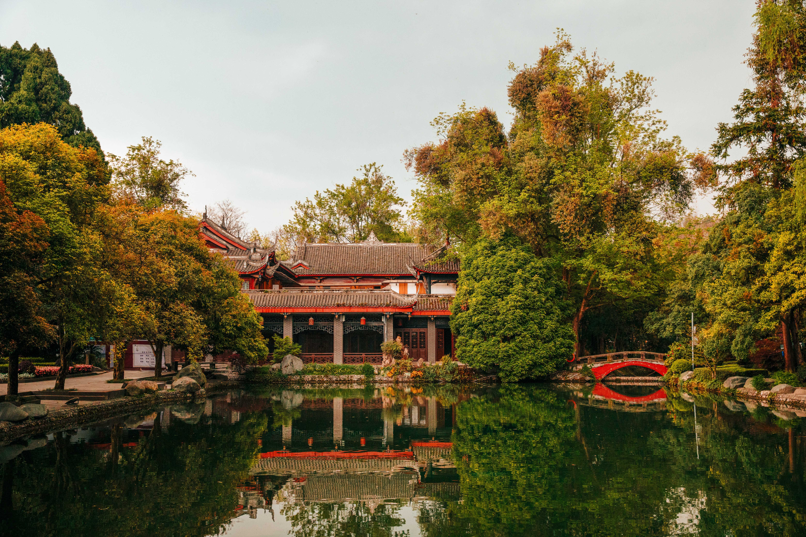
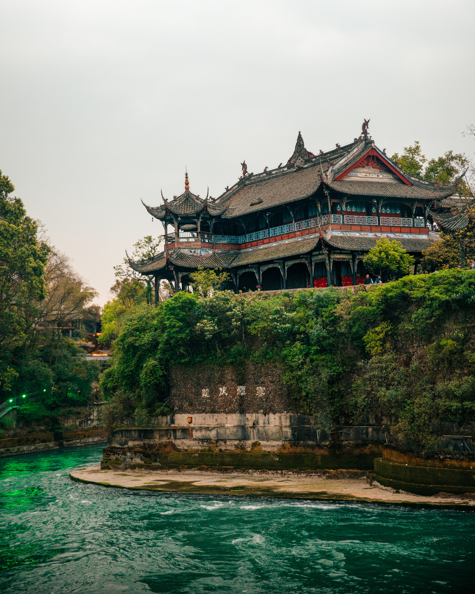
Architecture: Tradition and Transformation in Urban Space
Chengdu's architecture tells the story of a city navigating modernity while maintaining cultural identity. The old city center contains traditional structures—low-rise neighborhoods, narrow streets designed for foot traffic, courtyards that concentrate activity inward. But increasingly, contemporary architecture dominates: skyscrapers, shopping centers, modern office parks. The interesting architecture happens at the boundary: buildings that incorporate traditional materials and proportions into contemporary designs, streetscapes that blend historical preservation with new construction.
What distinguishes Chengdu's architectural approach is that it doesn't simply preserve old buildings as museums. Instead, the city adapts old neighborhoods, creates new buildings that acknowledge traditional design language, and allows commerce to move into historical areas without sterilizing them. Traditional teahouses operate in newly renovated spaces. Old neighborhoods become vibrant centers of contemporary life rather than frozen historical zones. This approach keeps tradition alive by making it economically viable.
The contemporary architecture reflects Chengdu's ambitions: the city is modernizing rapidly, becoming a major commercial and technological center. New buildings announce this transformation in glass and steel. Yet even these modern structures often incorporate traditional decorative elements, reference local materials, or create proportions that echo historical precedents. Chengdu is building a future that knows where it came from.
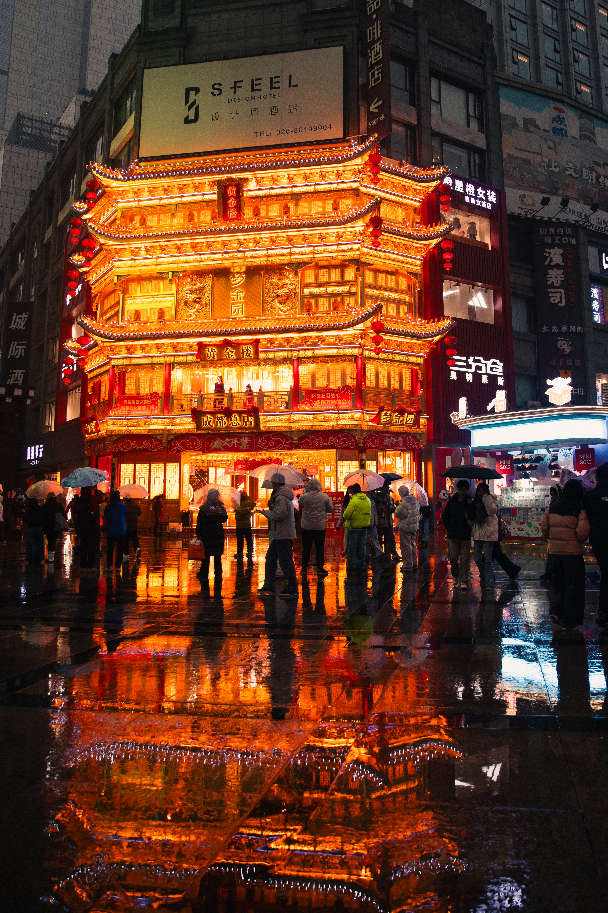
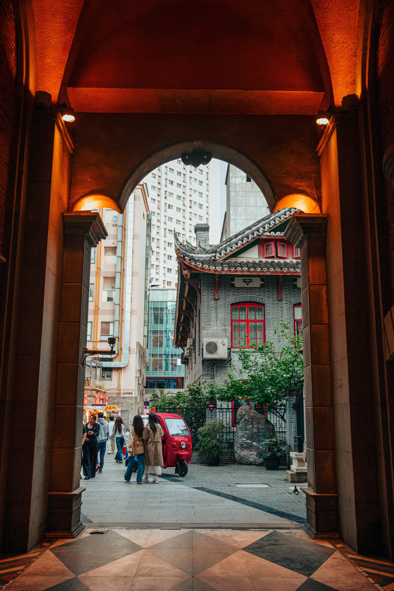
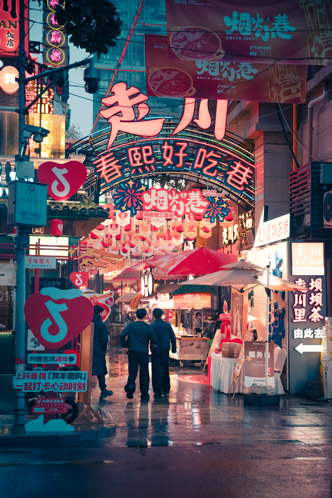
Street Life: Where Locals Live Their Days
The true character of Chengdu emerges in its street life—the spaces where locals move through daily routines without performing for visitors. This is where you see Sichuan traditions in action: the old woman operating a street noodle stall with practiced efficiency, the teenagers gathering outside shops, the elderly men playing mahjong at outdoor tables, the vendors selling specialty snacks to people who have bought from them for years. Street life in Chengdu feels lived-in and authentic in ways that packaged tourism cannot replicate.
Night transforms Chengdu's streets into something electric. Neon signs illuminate neighborhoods in colors that feel distinctly contemporary, creating a visual language that contrasts sharply with daytime streetscapes. Night markets come alive with food vendors, music, young people gathering for entertainment. The city reveals a different personality after dark—more energetic, more willing to embrace spectacle and pleasure. This duality—between traditional daytime and neon-lit night—defines much of contemporary Chengdu's aesthetic.
What strikes visitors most is the integration of leisure into daily life. Unlike more hurried Chinese cities, Chengdu preserves the Sichuan philosophy that time itself is a value. Sitting in a tea house for hours is not inefficiency—it's alignment with proper living. Walking slowly through neighborhoods, stopping to chat with vendors, allowing the day to unfold rather than rushing through it—these are not lost traditions in Chengdu, they are still normative. The street life reflects this philosophy: a city that works hard but refuses to sacrifice human connection and simple pleasure.
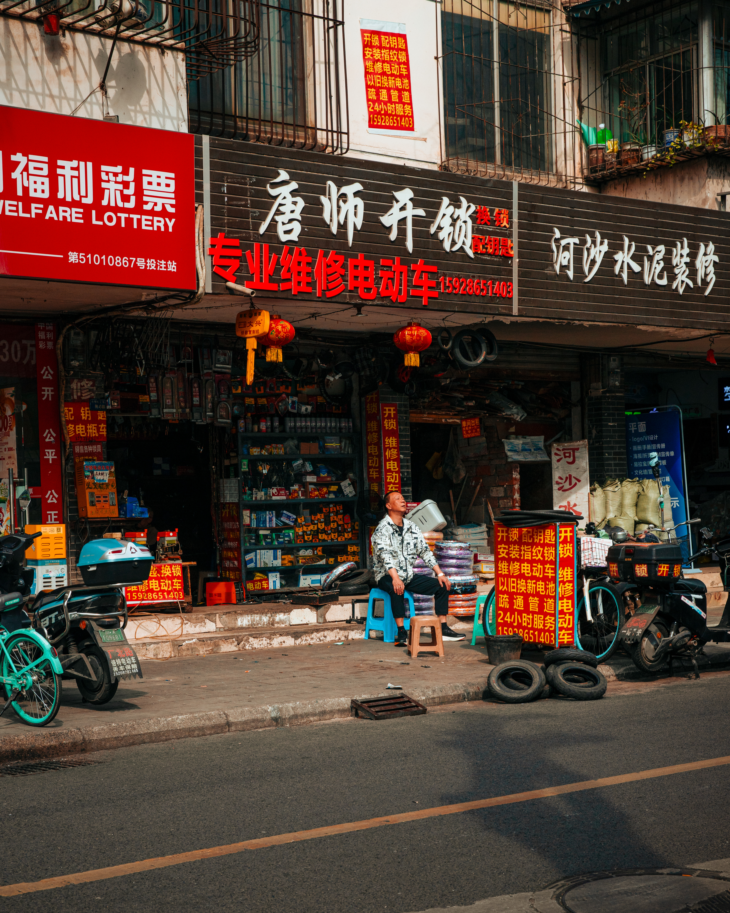
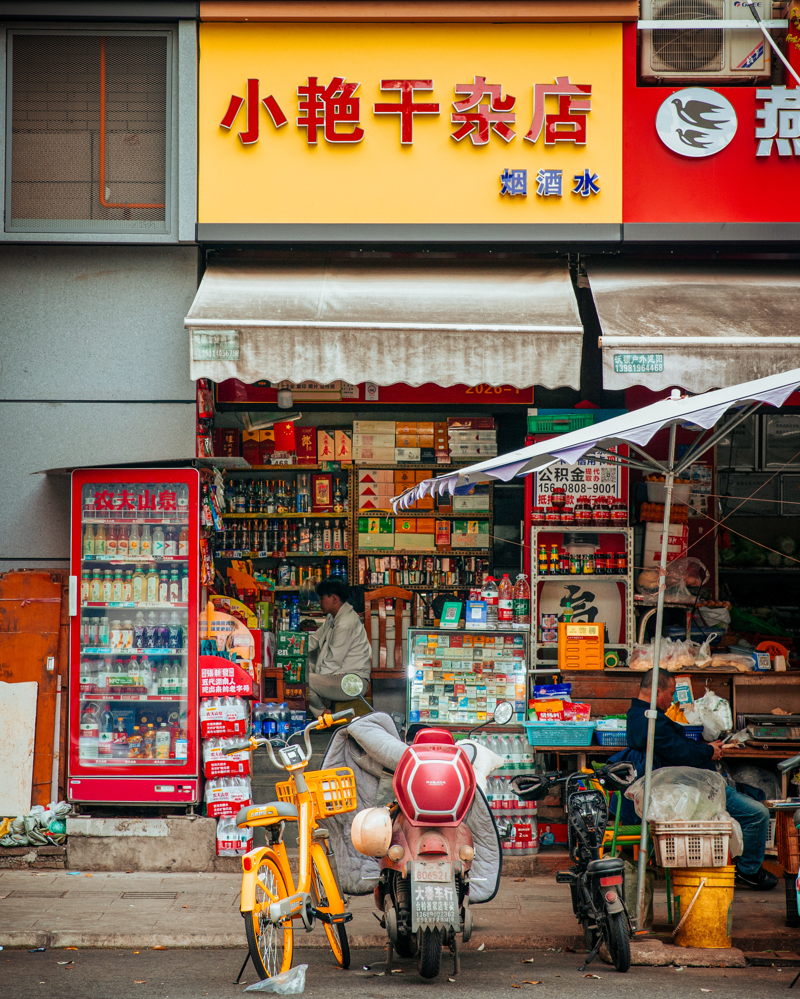
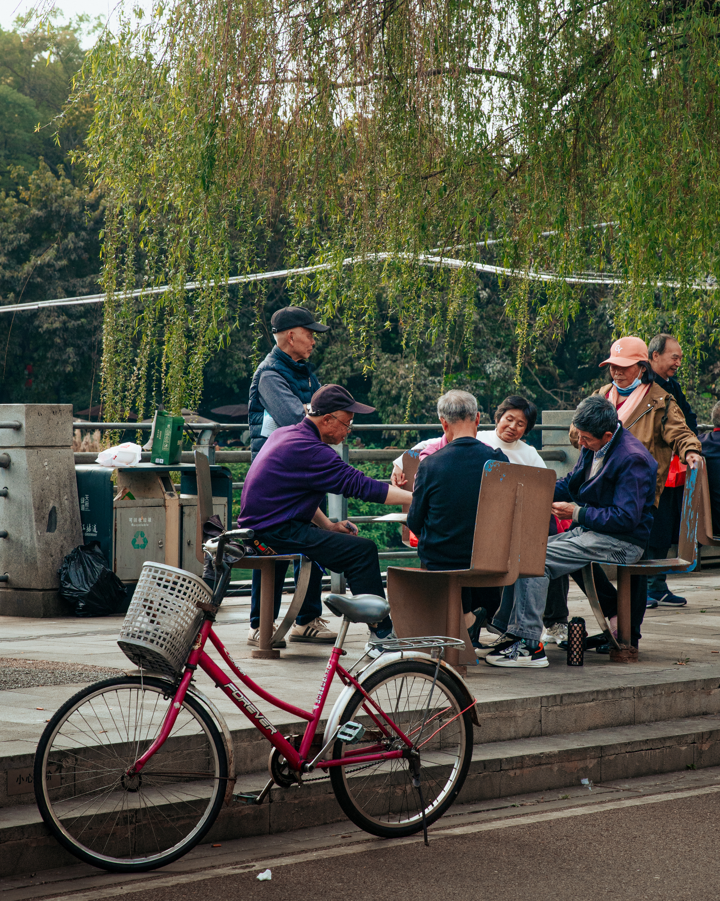
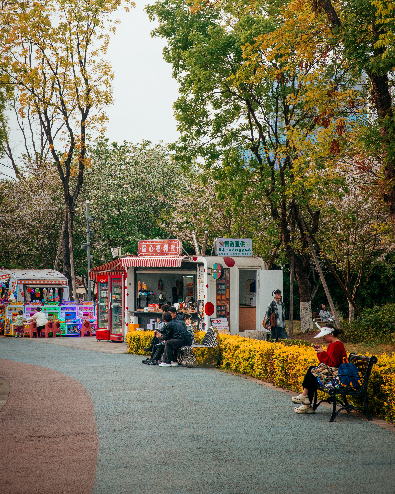
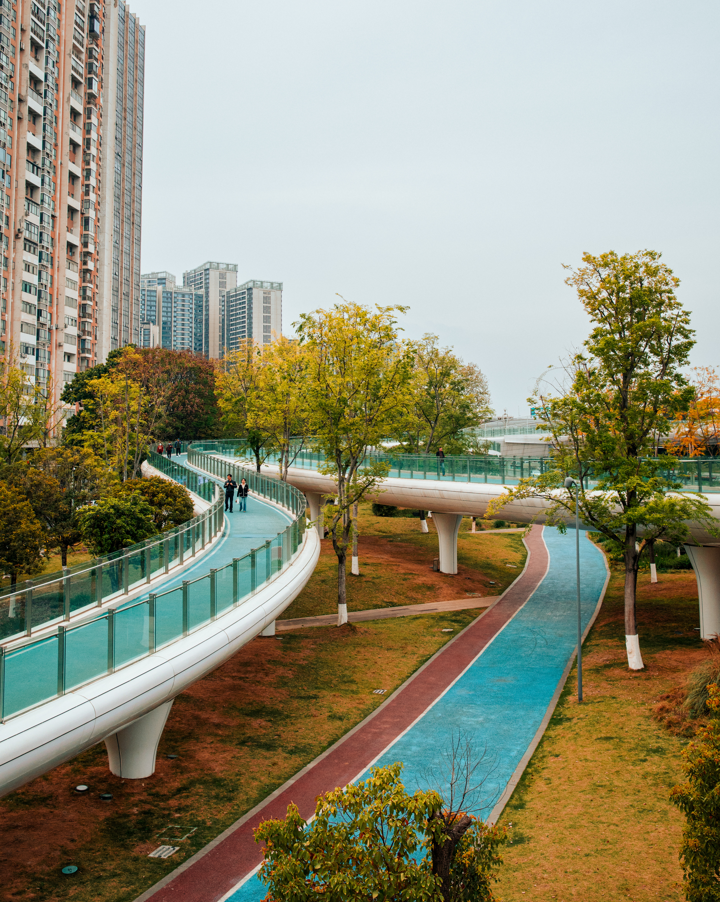